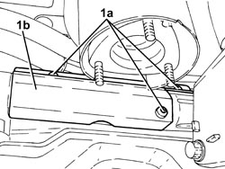

4130A14 POWER STEERING BOX COVER - R R
- Path
- Procedures > 41 STEERING UNIT > 4130 POWER STEERING > 4130A POWER STEERING BOX > 4130A14 POWER STEERING BOX COVER - R R
- Kind
- repair procedure (removal / refitting; the operation number is the code)
- Applies to
- engines: 1.8, 2.2; all production periods
- Interactive page
- https://sloeber94.github.io/elrnDB-fCrm/en/#/194000529
Applies to: engines: 1.8, 2.2; all production periods
 Removing
Removing
 Refitting
Refitting- Position the vehicle on a lift.
1. Undo the bolts (1a) and remove the power assisted steering box shield (1b).

Applies to: engines: 1.8, 2.2; all production periods
Refitting
Removing- Place the power assisted steering box shield back in its housing and secure it using the bolts.
- Remove the vehicle from the lift.